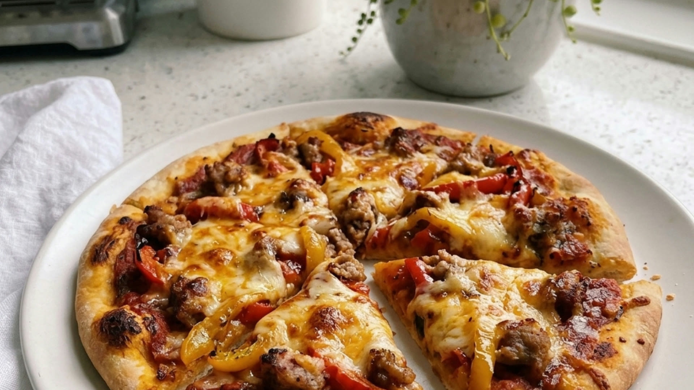

Oregano and tomato, sausage and pepper. Shop-bought bases on a school night; roll a dough if you’ve got time.
Heat the oven to 220C (200C fan). Put the pizza bases on trays.
Fry the sausage meat in a little oil for 6–8 minutes until browned. Add the peppers for the last 3 minutes.
Stir the oregano into the passata. Spread over the bases.
Scatter over the sausage, peppers and cheddar.
Bake for 10-12 minutes until the edges are crisp and the cheddar is melted and bubbling. Slice and serve.
Get new weekly meal plans and family recipes delivered straight to your inbox.
No spam. Cancel anytime. Just good food.